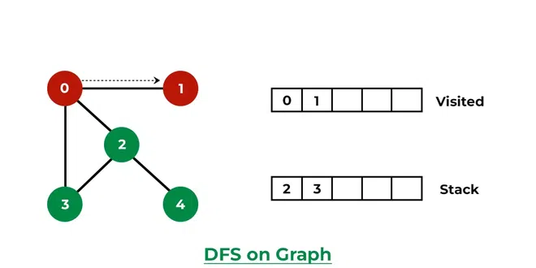
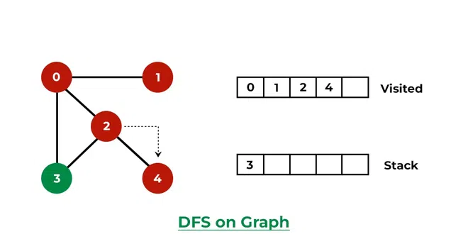

AI & DS
PEAS Representation
Example:
| Agent | Performance | Environment | Actuator | Sensor |
|---|---|---|---|---|
| Soccer player robot | Number of goals, penalties scored, Speed of players |
Team mates, opposition ground goal, referee |
Joint angles, motors |
Camera proximity sensor, infrared sensor |
| Part picking robot | Percentage of parts in correct bins | Conveyor belt with parts bins | Jointed arm and hand | Camera, joint angle sensors |
| Medical diagnosis system | Healthy patient minimized cost | Patient, hospital staff |
Perscription diagnosis, scan report |
Symptoms patient response |
| Auto mated car | Comfortable trip safety maximum | Roads, traffic vehicles |
Wheel, accelerator break mirror |
Camera, GPS, odometer |
| Subject tutoring | Maximize scores, improvement in students |
Classroom, Desk, chair, Board, staff, Students |
Smart displays, corrections |
Eyes, ears note books |
| Taxi Driver | Safe, fast, legal, comfortable trip, maximize profits |
Roads, other traffic, pedestrians, custormers |
Steering wheel, accelerator, break, signal, horn |
Cameras, sonar, speedometer, GPS, engine sensors, keyboard |
Types of Agent

Wumbus world problem

- The Wumpus world's agent is an example of a knowledge-based agent that represents knowledge representation, reasoning and planning.
- Problem statement - The wumpus world is a cave with 16 rooms (4x4). Each room is connected to others through walkways (no rooms are connected diagonally). The knowledge-based agent starts from Room.
- The cave has some pits, a treasure and a beast named Wumpus.
- The wumpus can not move but eats the one who enters its room.
- If the agent is rewarded, when the goal conditions are met.
- The agent is penalized, when it falls into a pit or being eaten by the weimpus.
- Some elements support the agent to explore the cave like - The wumpu's adjacent rooms are stench
- PEAS representation of Wumpus world proble
- Performance
- Agent gets the gold & return back safe = +1000 points
- Each move of the agent = -1 point
- Agent dies = -1000 points
- Agent uses the arrow = -10 point
- Environment
- A cave with 16(4x4) rooms
- Rooms adjacent to the wumpus are stinking
- Rooms adjacent to the pit are breezy
- The room with gold glitters
- Agent's initial position-room [1, 1] & facing right side.
- Location of wumpus, gold and 3 pits can be anywhere except in room [1, 1].
- Actuators
- Devices that allows the agent to perform the following action in the environment.
- Move forward
- Turn right
- Turn left
- Shoot
- Grab
- Release
- Devices that allows the agent to perform the following action in the environment.
- Sensors
- Devices which helps the agent in sensing the following the environment.
- Breeze
- Stench
- Glitter
- Scream (When the Wumpus is killed)
- Bump (When agent hits a wall)
- Devices which helps the agent in sensing the following the environment.
- Performance
Propositional logic
Source: Propositional Logic, Propositional Variables & Compound Propositions
Proposition is a declarative sentence which can be either TRUE or FALSE but cant be both.
Examples:
- Statement that are propositional logic (because they are stating a fact and are either true or false but not both).
- Delhi is the capital of India.
- Water Froze this morning.
- 1+1=2
- Statement that not propositional logic
- What time is it? (Not stating a fact and not declarative sentence)
- x + 1 = 2 (can be both TRUE or FALSE)


First order logic
Source: Introduction to First Order Logic
First-order logic (FOL) is a type of mathematical logic that allows you to reason about properties of objects using quantifiers like "all" (represented as ∀) and "some" (represented as ∃).
Unlike propositional logic, which deals with true or false statements, FOL works with both.
Predicates:


Examples:

Define Agent
- An agent is an independent program or entity that interacts with its environment.
- Agents can be simple rule based systems or complex machine learning models.
- Agent is used to map precept to an action.
- Agent is something that act.
- Agent = Agent program + Architecture
There are four types of agents:
- Simple reflex agent
- Model based agent
- Utility based agent
Goal based agent
Define AI
Artificial Intelligence (AI) is the simulation of human intelligence processes by machines, particularly computer systems.
It involves creating intelligent agents that can perceive their environments, make decisions, and take actions to achieve specific goals.
AI includes various aspects such as expert systems, natural language processing, speech recognition, and machine vision.
AI systems operate autonomously, meaning they do not require constant human input.
Type of Search Techniques
 Iterative deeping depth first search
Iterative deeping depth first search
Uniformed Search
Uninformed search in AI, also known as blind search, refers to a type of search algorithm that explores a problem space without using any specific knowledge or heuristics about the problem.
Breadth First Search
- Uses FIFO (First in First Out) queue.
- Unlike depth first search, the breadth first search completes 1 level fist then go to next level.
- It always complete the answer.
- Example:

Uniform Cost Search
- Uniform cost search considers the expense.
- When there are multiple paths to achieving the desired objective, the optimal solution of uniform cost algorithms is the one with the lowest cost.

$=S-A \to A-D \to D-G$
$=1+2+3$
$=6$
Depth First Search
- Unlike breath first search, the depth first search goes to all way to the depth instead of completing one level.
- It can go to infinity loop.
- Example:
-copy-660.webp)
-copy-660.webp)

-copy-660.webp)

-copy-660.webp)
Depth Limited Search
- It work like Depth first search.
- But has depth limit how low it can search.
- After reaching depth limit, if it can't find the goal node then will jump to other side of node.

Iterative Deepening Search first search
Iterative Deepening Search | IDS Search | DFS Algorithm in Artificial Intelligence by Mahesh Huddar


Bidirectional Search
- Two simultaneous search from on initial node to goal and backward from goal to initial, stopping when two meet.
- Time Complexity: $2(b^{\frac{d}{2}})$
- Complete in breadth first search.
- Not in depth first search.

Informed Search
Informed search in AI is a type of search algorithm that uses additional information, such as heuristics or cost estimates, to guide the search process and prioritize which nodes to expand and explore.
Best First Search
Source: Best First Search Algorithm in Artificial Intelligence | How it Works | All Imp Points(Pros & Cons)
- Also know as greedy search.
- This algorithm does not involve past knowledge.
- BFS (Best First Search) = F(n) = g(n)

A*
- This search algorithm involve past knowledge.
- A* search is optimal as the path found is always optimal.
- A* = g(n) + h(n)

Knowledge-based Agent
Knowledge-based agent are those agents who have the capability of maintaining an internal state of knowledge reason ever that knowledge, update their knowledge after observation and takes actions.

KBA composed of two main parts:
- Knowledge base:
- Knowledge base is required for updating knowledge for an agent to learn with experiences and take action as par the knowledge.
- Inference system:
- Inference means deriving new sentences from old.
- It allows us to add new sentence to knowledge-base.
Graph coloring
- Let G be graph 8m be a given positive number.
- With m colors we have to check whether the nodes of G can be colored in such a way that no two adjacent nodes have same color.
- Chromatic Number (m): The m color-ability optimization asks for the smallest integer (m) from which the graph G can be colored.
Example:

Water Jug Problem
- Two jugs of different capacities all given: X & Y Litre
- No marking is there on the jug.
- Goal is to fill exactly 'L' litres of water into 'Y' litre JUG state is represented as
- Example:
- Suppose capacity of two jugs: 2 liter, 3 liter
- Goal: To get exactly '1' liter of water
- Init State: 0 liter, 0 liter
- Step 1: Fill 3 liter jug: 0 liter, 3 liter
- Step 3: Pour 3 liter jug water in 2 liter jug fully: 2 liter, 1 liter.
- Step 4: Trough 2 liter jug water: 0 liter, 1 liter
- Goal State Achieved <0, 1> liter
Mini/Max Algorithm

- Back tracking algorithm
- Best move strategy used
- Max will try to maximize its utility (Best Move)
- Min will try to minimize utility (Worst Move)